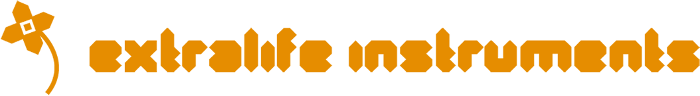

Press the 0-9 keys or NUMPAD keys to play the drums.
ER-99 is a web-based instrument 🎛️ based on a famous Japanese drum machine from the 1980s. It was built to celebrate 9/09 day 2022 🎉!
All of the drums are synthesized using the WebAudio API. The hi-hats, crash, and ride cymbals are produced from sampled audio.
The complete source code is available on Github.
You can play the drums by pressing the number buttons on your keyboard. Turn the knobs to change the sound of each instrument.
The 16 buttons at the bottom show the sequence for each instrument. Click once to activate a step, and click again to add an accent (indicated by a brighter light). The emphasis of the accented notes is controlled by the "Accent" knob. You can make 64-step sequences by using the BARS buttons to edit subsequent pages.
You can store Sequences and Sound Presets using the menus above. These are stored in your browser's memory and will be recalled the next time you visit (on this computer).
Hello! My name is Matthew Cieplak, and I'm known online as Extralife. I make music, youtube videos, and synthesizer modules. You can follow me on Instagram, Twitter, and Github.
If you like this project, you can support me on Patreon to help me keep building new instruments. Thanks!
© Extralife Instruments 2022